The Universal Key Ingredient to Almost Every Song Ever Written:
I * IV * V / (vi)
I know this may seem incredible, but it is true across all genres of music across the ages. You may have heard of musicians mention the 1-4-5 jam before and didn't know what they were talking about. For my last page I will share with you this simple chord progression relationship for a slew of different keys. After that, I will share a few resources for you to look up familiar songs to play. I challenge you to take some of these and convert them to this code and examine their core relationship. I think you will be amazed at how prevalent this type of chord pattern is!
| I | IV | V | (vi) | min | 7th | m7 |
|---|---|---|---|---|---|---|
| 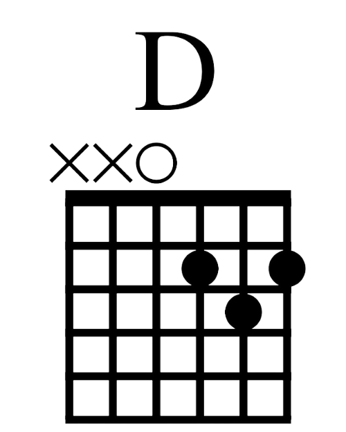 | 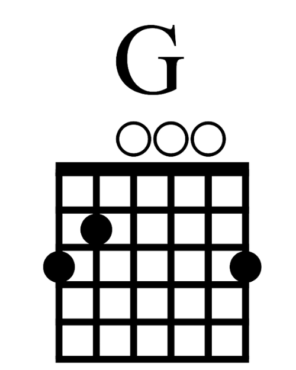 | 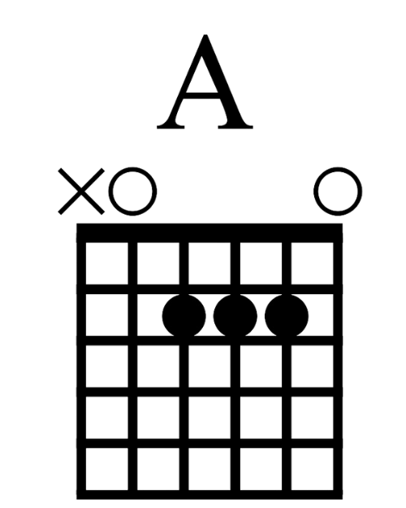 | 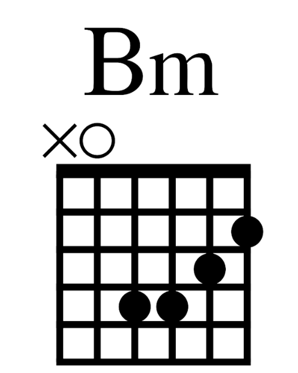 | 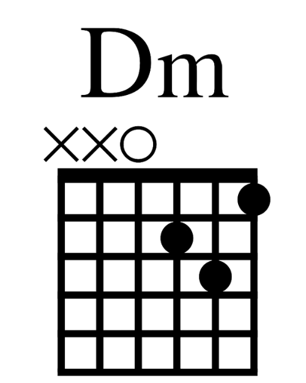 | 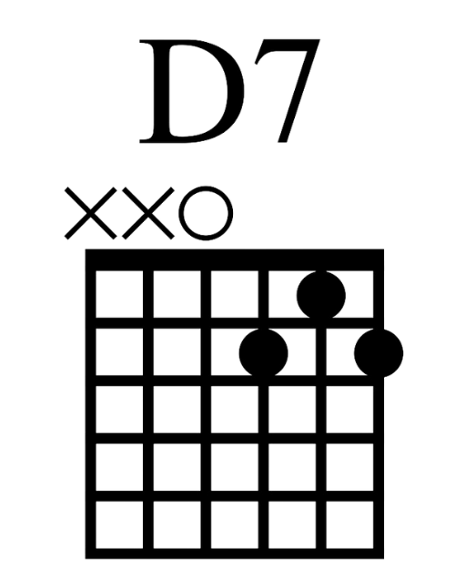 | 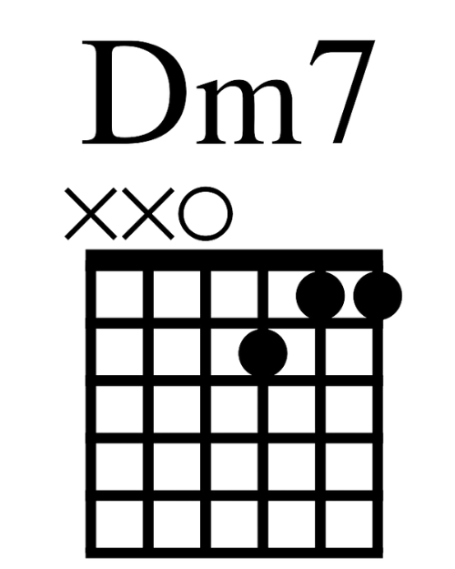 |
| 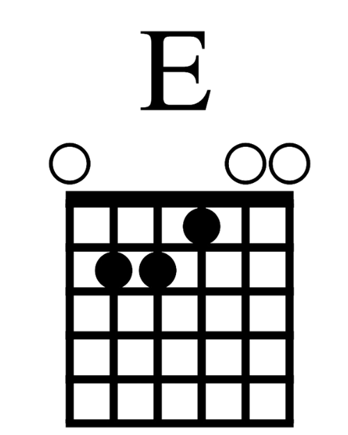 | 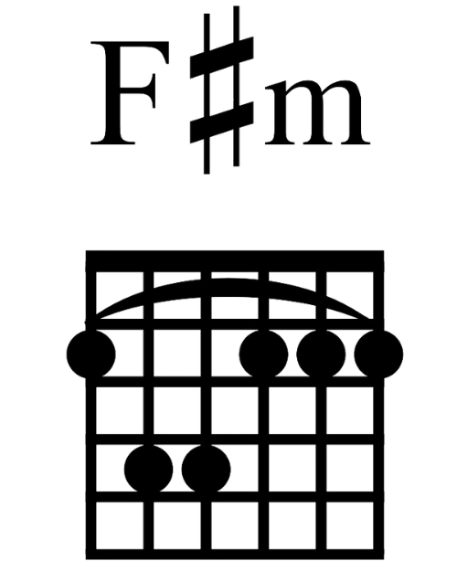 | 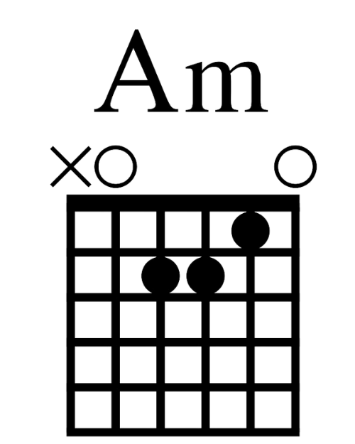 | 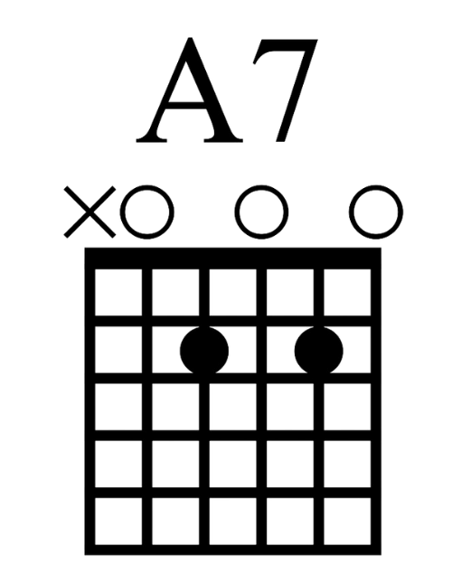 | 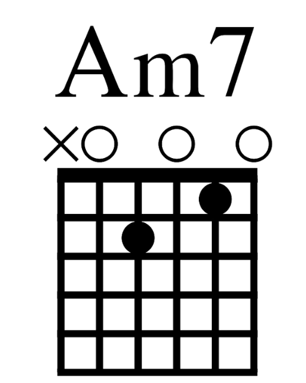 | ||
| 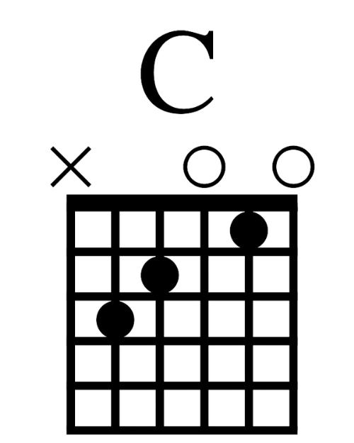 | 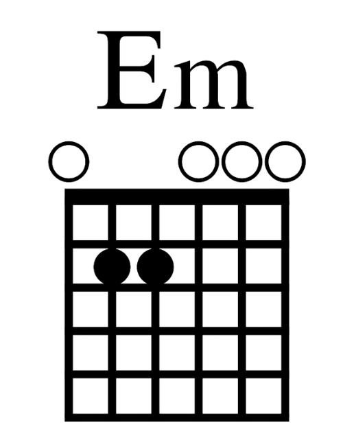 | 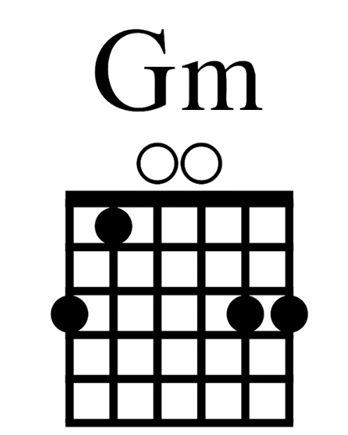 | 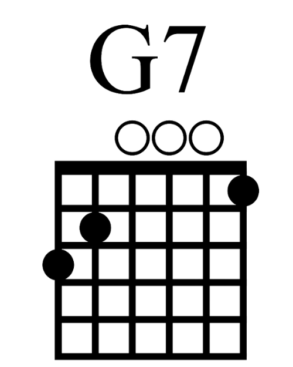 | 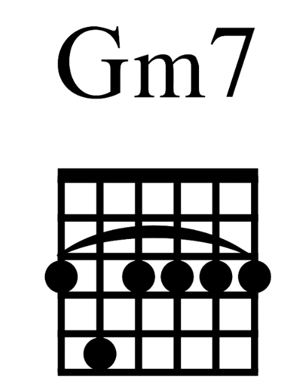 | ||
| 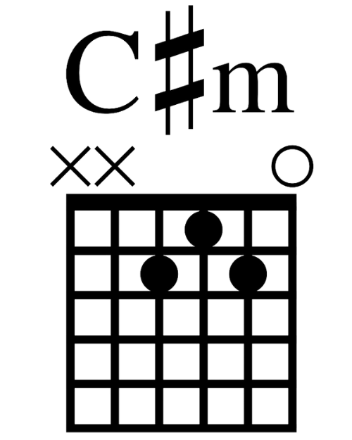 | 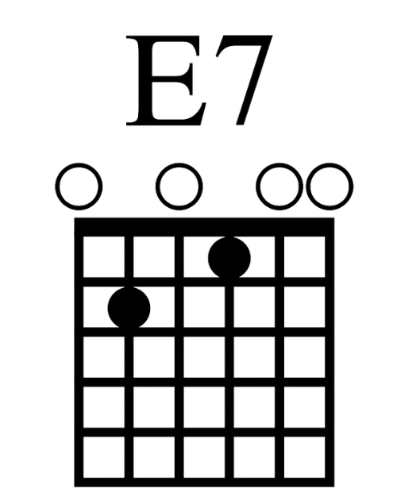 | 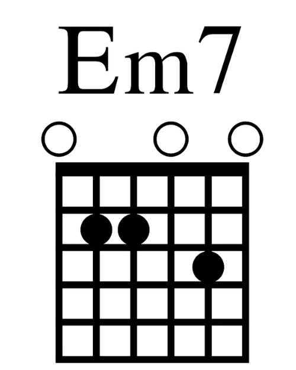 | ||||
| 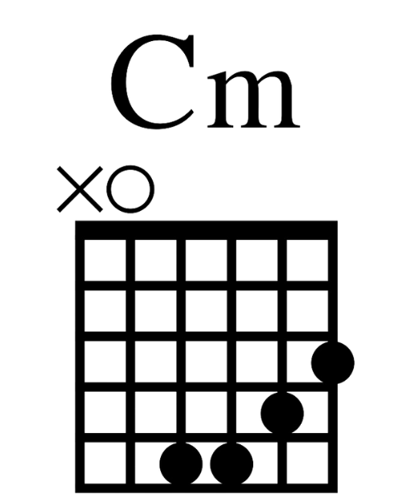 | 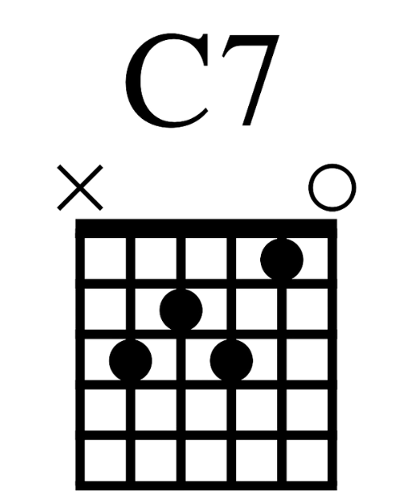 | 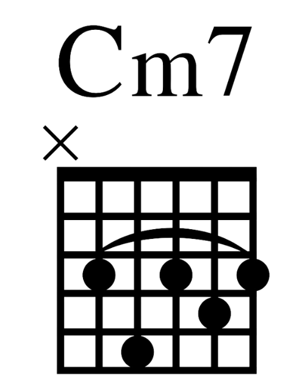 | ||||
| 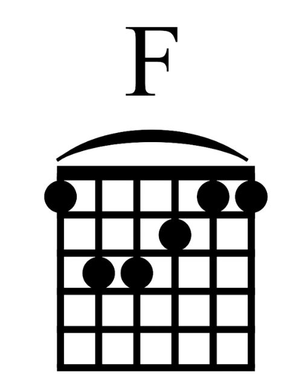 | 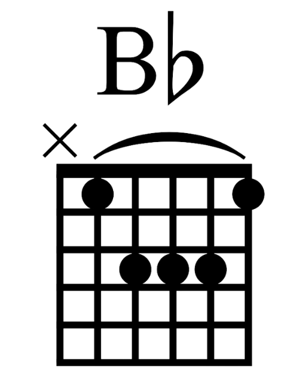 | |||||
| 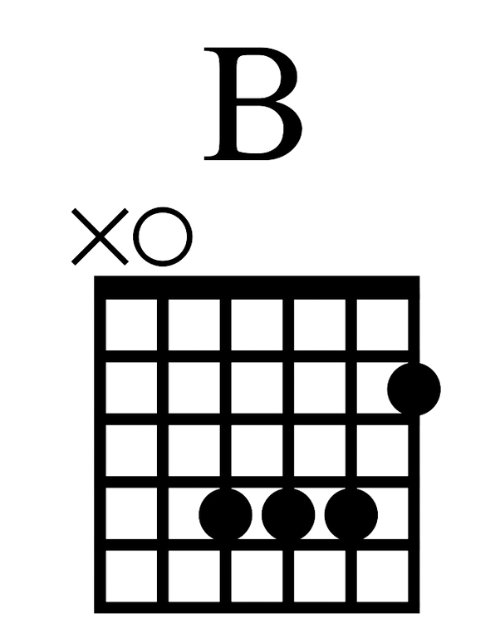 | 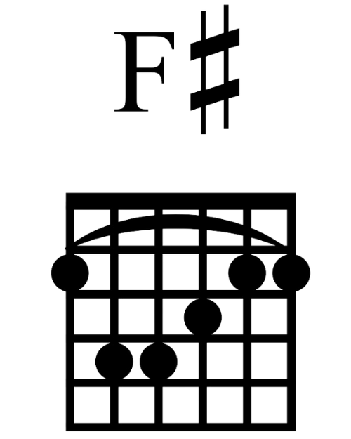 | 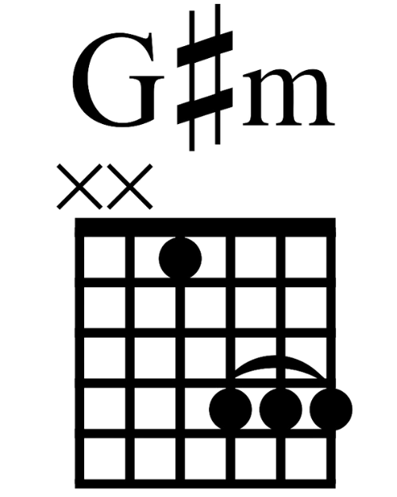 | 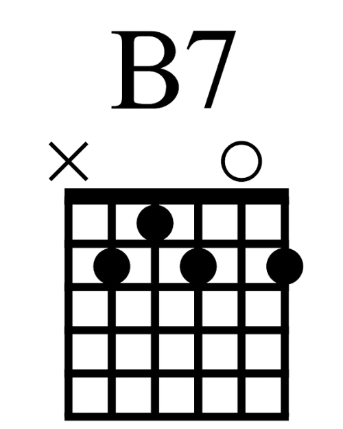 | 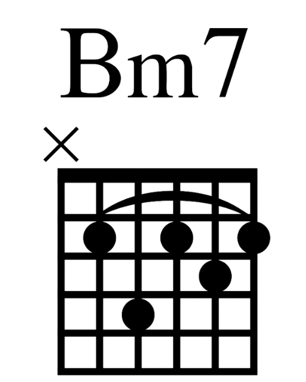 |
...There is!
It can be as EASY as 1 * 2 * 3:
- Learn basics of reading chord charts and tab within minutes!
- Practice translating to finger positions on the fretboard...
- Clamp down tight, fingers perpendicular to the fretboard, & practice picking notes clearly and strumming the whole chord!
Benefits of Knowing Chord Charts and Tablature
- Guitar chord charts and tab is universally understood among musicians the world over!
- Trade your latest tricks and discoveries with your friends!
- Open up the world of free online versions of all your favorite songs!
Are you ready to meet your New Best Friend?
Your interest in guitar tab assumes that you may already have access to a guitar of some sort. Alternately, you may not have one yet, but you are interested. Either way, at some point the rubber meets the road, so now it is time to talk about the Mystical Magical Music Machine known as the GUITAR!
Clik Here ==> to learn about some Guitar Basics
*Note: a FABULOUS Resource!: TuxGuitar